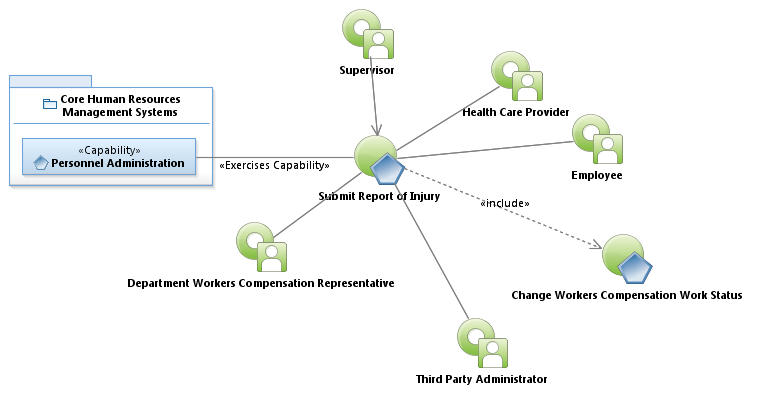
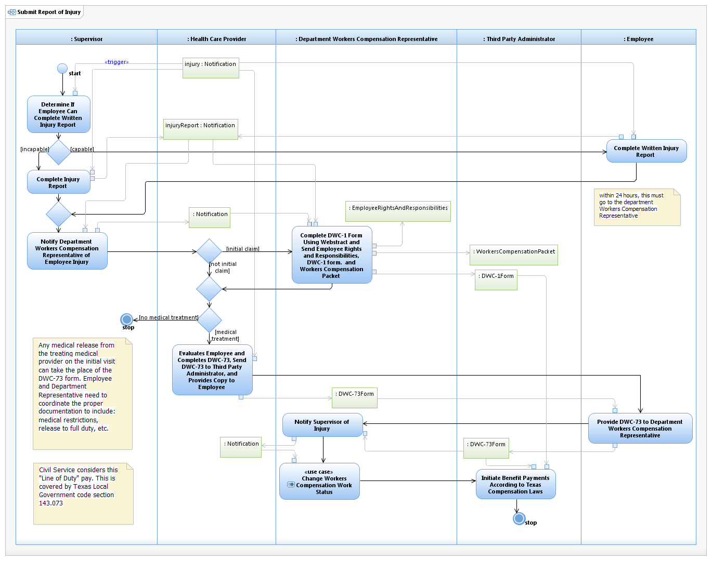

Use Case Model: Submit Report of Injury
Architect: Aaron Brown, IT Enterprise Architect Senior
Date Last Modified: 4/5/2013
User Review: Leslie Milvo, Cindy Steffen, Shelly Sheppard
Date: 4/5/2013
Employee reports injury to Supervisor who engages the Department Workers Compensation Representative to file a claim with the Third Party Administrator.
Follow link to Role Definitions

Use Case Model: Submit Report of Injury

Activity Model: Submit Report of Injury